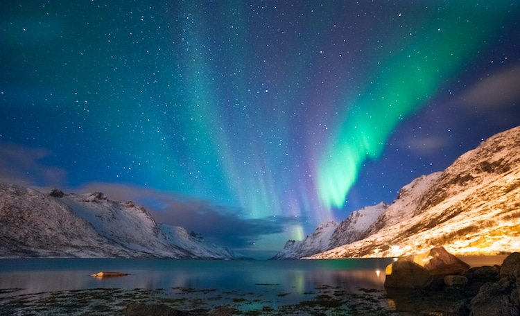
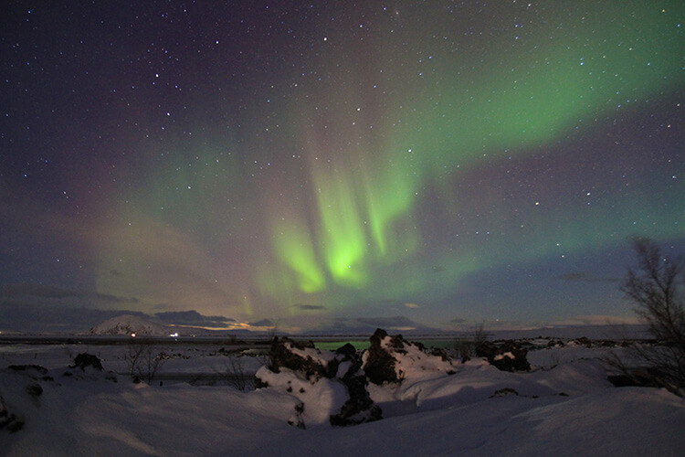

Info
Introduction

The Aurora is an incredible light show caused by collisions between electrically charged particles released from the sun that enter the earth’s atmosphere and collide with gases such as oxygen and nitrogen. The lights are seen around the magnetic poles of the northern and southern hemispheres.
Introduction
